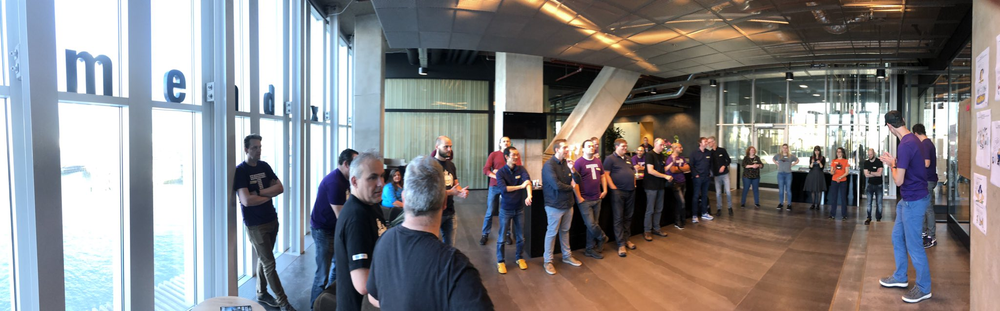

Event format

TestCraftCamp is organized as an unconference, a conference format that follows the Open Space Technology The idea of an unconference is to learn from and share with each other. It’s a way to build a conference around those meaningful interactions you have during the breaks at a normal conference.
In this format, attendees are also session contributors. Anyone who wants to initiate a topic can claim a time slot in the conference schedule, and the agenda is done once the schedule starts, on the spot, as we will explain later.
Once you are at the conference, the organizers' jobs are over. They have provided a space and the tools for the event, after this, it’s up to you as a participant to make it a great event.
We use the open space principles to organise our event. At the beginning of the conference we will go over the principles and rules to make sure everybody knows how the conference is run.
Virtual Edition
Due to the uncertain situation while organising this years conference, we have decided to not do a physical edition. Our crew members have in the past months experienced very successful editions of other virtual open space conferences and decided to follow this example. We expect to use Zoom and Miro as our main conference tools.
We use Slack for pre-, side- and post conference discussions. You will be invited to our Slack channel before the conference.
Open Space Principles
There are some simple rules for participants.
-
Whoever comes is the right people
As a facilitator, you should welcome anyone who has decided to join your session, and not be frustrated if you expected different people.
As a participant, you should be ready to collaborate with anyone. -
Whenever it starts is the right time
As a facilitator, if you need some time to prepare, take it. Just think that people might get bored and go join another session. The best is to prepare anything in advance.
As a participant, there is nothing wrong with joining a session in progress. But respect the people who have already started, and try to jump in quietly. -
Wherever it is, is the right place
You will be offered several spaces for your session. Choose the one that fits your needs as a facilitator or as a participant. -
Whatever happens is the only thing that could have
Be prepared to be surprised. Don’t be annoyed if you get feedback. Don’t be disappointed if it doesn’t work. Try again if need be. -
When it’s over, it’s over
As a facilitator, it’s up to you to mind your timebox. The organizers will not do it for you. Keep in mind that the participants of your session might want to go to another session after yours, and that the room might be reserved after. Feel free to continue in a different location with whoever is interested.
Law of two feet
If, during the course of the event, any person finds themselves in a session where they are neither learning nor contributing, they have the responsibility to themselves to stand up and go to some more interesting place.
Butterflies
Butterflies hang out, looking relaxed, maybe drinking tea. They don’t appear to do much and interesting discussions may emerge around them as people find them and pause to chat. They may just be involved with the most important discussions of the day.
Bumble Bees
Bumblebees fly from group to group cross-pollinating the discussions, bring new ideas, and fresh eyes to the table. They can also encourage mingling for those for whom the Law of Two Feet feels a bit rude.
How do I prepare?
If you want to know how to prepare for an unconference, you can read about that here.
Schedule
All times are in CEST, i.e. UTC+2.
Friday 18 September
| Start Time | Activity |
|---|---|
| 19:00 | Warm-ups & getting to know each other |
| 19:30 | Conference instructions |
| 19:50 | Break |
| 20:00 | Track 1: Tools for session facilitators |
| 20:00 | Track 2: Lean coffee |
| 20:00 | Track 3: Fun starts |
Saturday 19 September
| Start Time | Activity |
|---|---|
| 09:00 | Walk in & Shared Breakfast |
| 09:15 | Welcome & Getting to know each other |
| 09:30 | Open Space Intro |
| 09:45 | Marketplace – Determining our morning sessions |
| 10:30 | Interactive sessions – Round 1 |
| 11:15 | Break |
| 11:30 | Interactive sessions – Round 2 |
| 12:15 | Lunch |
| 13:00 | Marketplace – Determining our afternoon sessions |
| 13:30 | Interactive sessions – Round 3 |
| 14:15 | Break |
| 14:30 | Interactive sessions – Round 4 |
| 15:15 | Break |
| 15:30 | Interactive sessions – Round 5 |
| 16:15 | Break |
| 16:30 | Retrospective & Closing |
| 17:00 | Virtual drinks & games |
If you have a longer session, you can claim two slots during the marketplace.